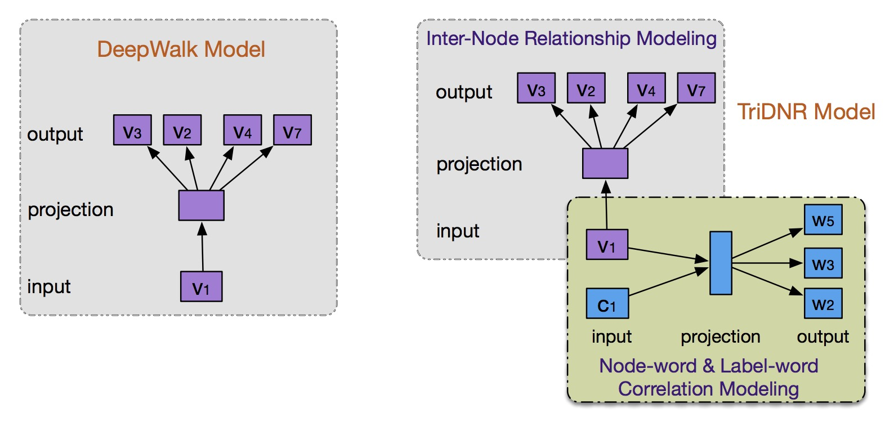
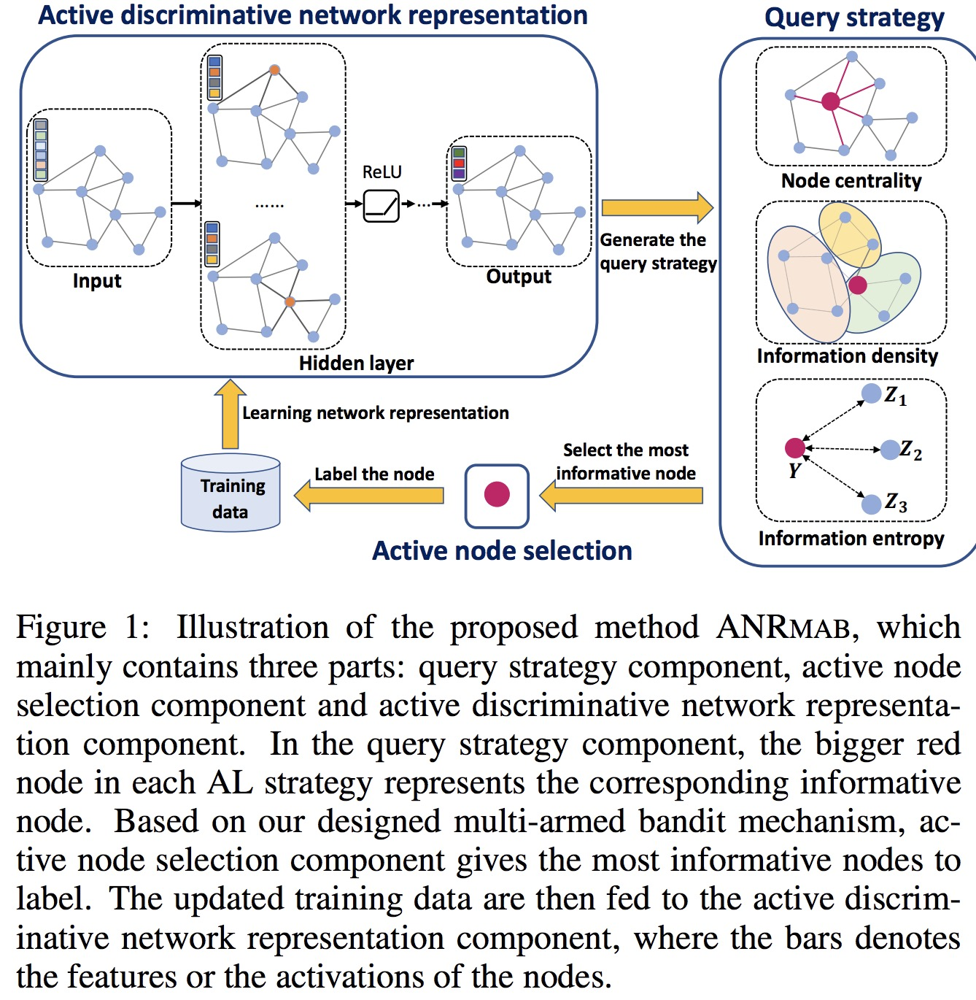
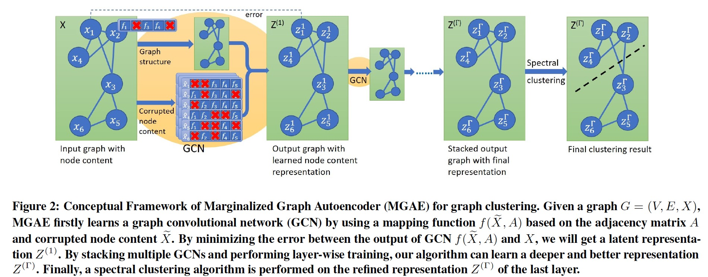

Information network mining often requires examination of linkage relationships between nodes for analysis. Recently, network representation has emerged to represent each node in a vector format, embedding network structure, so off-the-shelf machine learning methods can be directly applied for analysis. We have proposed a number of algorithms to address this problem, including:
Continuous Network Embedding
Continuous network embedding has been a hot topic since 2014, which aims to embed each node into a compact and continuous vector space. Our developments include:
- TriDNR: Tri-Party Deep Network Representation Learning (IJCAI-16) [Code]
- ARGA: Adversarially Regularized Graph Autoencoder for Graph Embedding (IJCAI-18)[Code]
- ANRMAB: Active Discriminative Network Representation Learning (IJCAI-18)
- MGAE: Marginalized Graph Autoencoder for Graph Clustering (CIKM-17)[Code]
Discrete Network Embedding
The network embedding is typically represented in continuous vector, which imposes formidable challenges in storage and computation costs, particularly in largescale applications. To address the issue, we propose to learn succinct and discrete node representation for fast node recommendation and classification. Our methods include:
- DNE: Discrete Network Embedding (IJCAI-18). This is the first work for discrete network embedding, which deals with a plain network without attribute information. The node is represented in a binary vector space.
- BANE: Binarized Attributed Network Embedding (ICDM-18). This is the first discrete network embedding algorithm which exploits both structure and attribute information to learn a binary code for each node in an attribute network. [Code]
- LQANR: Low-Bit Quantization for Attributed Network Representation Learnin (IJCAI-19). BANE algorithm may suffer information loss when we represent nodes in a binary space. In this paper, we represent each node in a low-bit width space. In this case, each node is represented as a low bit vector, which have a better performance in various downstream tasks.
TriDNR: Tri-Party Deep Network Representation Learning (IJCAI-16)
- TriDNR exploits node structure, node content, and node labels (if available) to jointly learn optimal node representation.
- Codes and Data are available here. 
ARGA: Adversarially Regularized Graph Autoencoder for Graph Embedding (IJCAI-18)
- ARGA is a novel adversarial graph embedding framework for graph data.
- Codes and Data are available here.

DNE: Discrete Network Embedding (IJCAI-18)
- DNE learns short binary codes to represent each node in a plain network, which exhibits lower storage and computational complexity than state-of-the-art network embedding methods, while obtains competitive classification results.
DNE is the first algorithm for learning binary representation for a plain network (without attibute information for nodes).

ANRMAB: Active Discriminative Network Representation Learning (IJCAI-18)
Label information is valuable for learning the discriminative network representations. ANRMAB actively seeks nodes to label to learn discriminative network representations with a multi-armed bandit mechanism. 
MGAE: Marginalized Graph Autoencoder for Graph Clustering (CIKM-17)
- MGAE is a stacked graph convolutional autoencoder model to learn latent representation for the graph clustering tasks.
- Codes and Data are available here. 